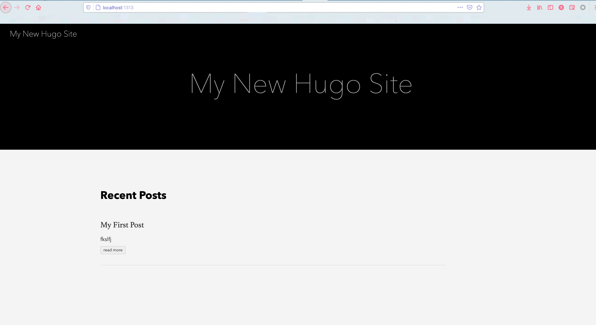
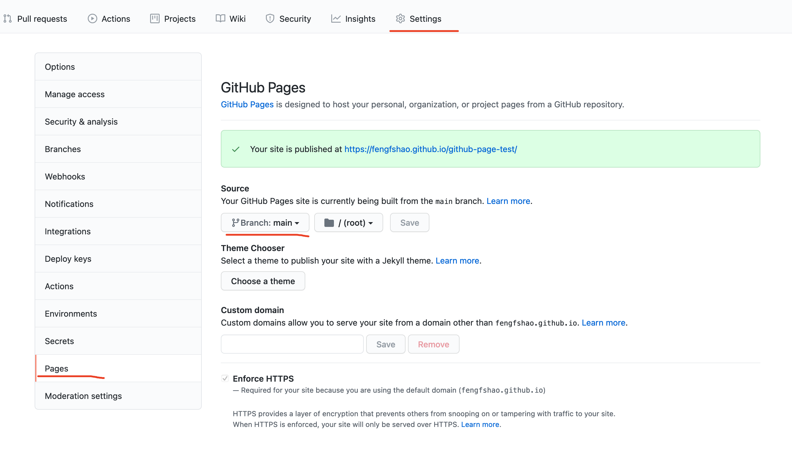

使用typora+hugo+githubpage维护博客
文章目录
怎么记笔记和博客这个问题，大家应该都考虑过，也有自己的做法。我的大致路线如下：
博客园 => 印象笔记 => vscode自己管理 => bootstrap => onenote
其实折腾这么多，无非就是想具有两个功能：
- PC+移动端自动云同步 && 支持markdown格式的笔记本软件
- 将笔记快捷发布到网站（博客）上分享
对于第一个功能，bootstrap/有道云笔记都可以，但是这类软件直接底层的文件不是原生的文本文件，需要手动
导出为markdown，且有些笔记，使用纯markdown格式也不好表达，因此最后选择onenote记笔记，对于一些
偏技术的，自己维护git目录表达，使用Typora编辑和预览，因为它的图片缩放处理比较好。
对于第二个功能，虽说手动发布到博客园等网站中也不错，还是决定维护自己的纯博客，使用hugo将markdown自动
转换为静态网站，使用githubpage当容器发布到外网，最后引入gittalk增加评论系统。
搭建步骤
hugo建站
参考hugo的quick-start 快速在本地搭建一个博客站点，执行hugo server -D在本地预览。

发布到githubpage
首先githubpage分为user和project两类，一个人只能有一个user的page，url是https://xxx.github.io，需要对应的仓库名是xxx.github.io，对于project的github page，url是https://xxx.github.io/yyy，这里yyy就是仓库名。
以project page为例，按照以下步骤：
-
创建一个github仓库，命名为github-page-test。
-
本地创建同名目录，在hugo目录下执行hugo server -D -d path_to_dir/github-page-test，在本地目录下git push。（这一步就是将
hugo生成的静态网站发布到github仓库，在对应的仓库中设置好page后即可访问，相当于github提供了域名和web服务器。
-
在仓库的settings->pages中选择分枝，默认是none，这里选择成main（有的人可能习惯用master），完成后如下。

-
直接点击上面的链接，会发现有些格式有些问题。这里需要更改config.toml，将baseURL替换为图里的链接。然后重新hugo -D，push等，禁用缓存或换个浏览器重新打开，就可以看到正常的界面了（还要考虑到githubpage的延迟）。
对于正式的个人博客，可能还是xxx.github.io这个域名好，要用user page，此时只需要创建一个名为xxx.github.io仓库，其他地方和上面的一样。
其他问题
如何展示图片？
一般在markdown中，填写图片文件的相对路径即可预览。本来以为hugo会自动扫描然后拷贝图片并替换url，后来发现含有图片的makrdown文件被hugo编译后不能正常显示。参考Hugo文档，如原来有一个a.md，引用了./a.asserts/b.png，编译成html后无法预览，此时需要在post目录中新建一个目录a，然后将a.md mv成index.md，然后将index.md和a.assert mv到目录a中，这样就可以展示图片了。
如何删除主题里的Powered by或强力驱动？
这样做可能道德上不太合适，但是个人强迫症实在，这里讲下我的方法。
到hugo目录中的themes/even，（由于我的主题是even），然后执行grep -ilr "Powered" . ，可以看到在./layouts/partials/footer.html文件的如下代码：
|
|
将这部分代码删除后，下面的内容就没有了。
添加评论功能
首先网站评论功能，有很多第三方插件，这里选择gittalk，gittalk用的比较广泛，且可以跟hugo直接适配。
gittalk使用参考这个博客，拿到clientId和secret后在config.toml里配置上即可。
这里我配置好后还遇到了gittalk未找到相关issue的问题，我在评论对应的git仓库中，手动新建一个第一个issue后问题解决。
文章作者 fengfshao
上次更新 2021-05-08